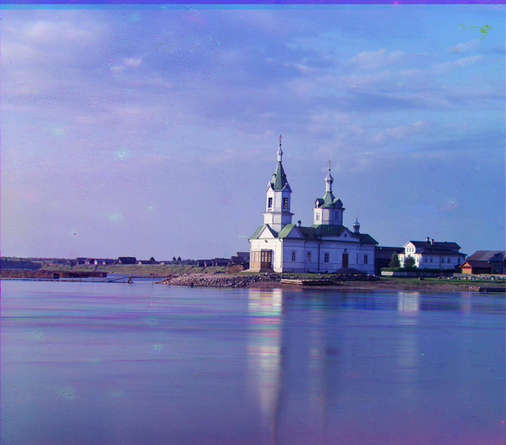
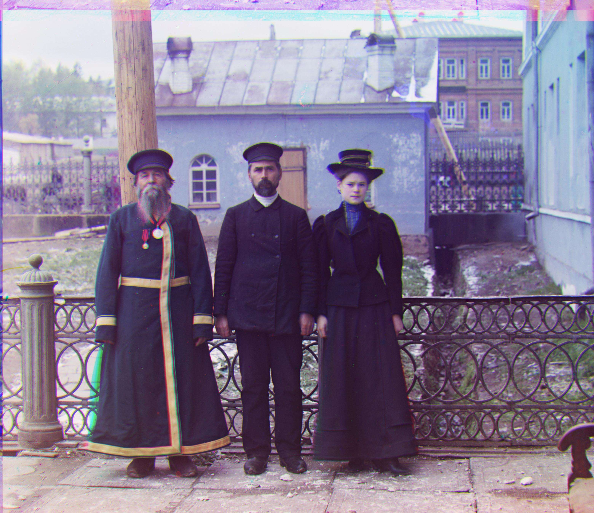

Official Results
red offset: [3, 12] green offset: [2, 5]

red offset: [-4, 58] green offset: [4, 52]
red offset: [-493, 147] green offset: [24, 49]
red offset: [13, 124] green offset: [16, 59]
red offset: [23, 89] green offset: [17, 41]
red offset: [11, 111] green offset: [9, 49]
red offset: [13, 179] green offset: [10, 82]
red offset: [2, 3] green offset: [2, -3]
red offset: [36, 108] green offset: [26, 51]

red offset: [-27, 140] green offset: [-11, 33]
red offset: [37, 176] green offset: [29, 78]

red offset: [11, 112] green offset: [14, 53]
red offset: [3, 6] green offset: [2, 3]
red offset: [32, 87] green offset: [5, 42]